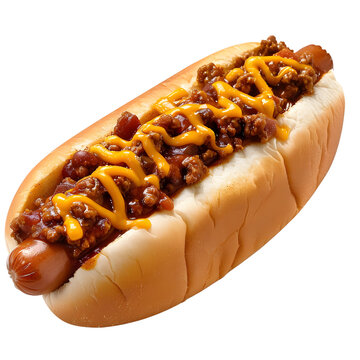
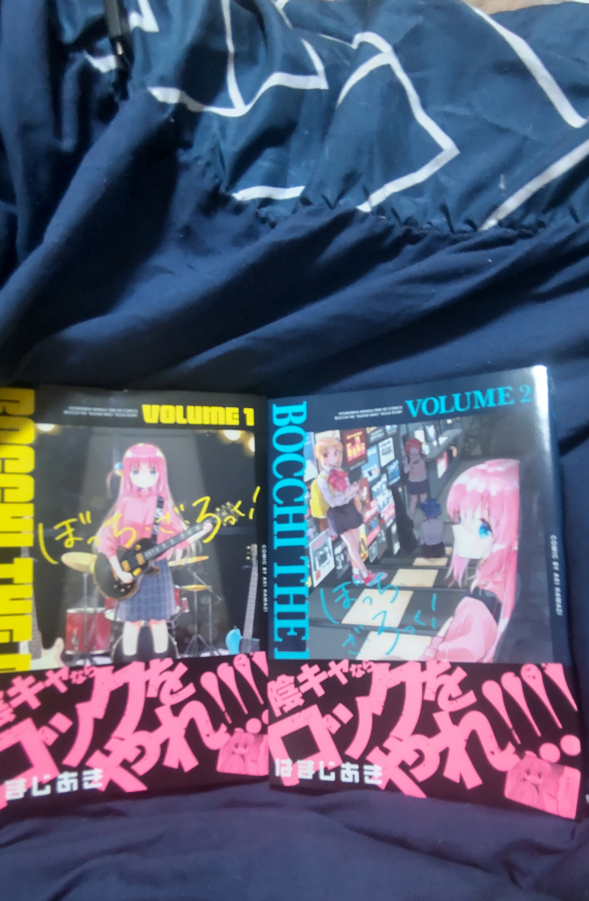
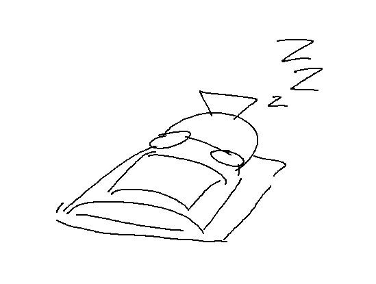

初自作ブログなので色々綴ります
今年の9月に自作した曲。これを流しながら記事でも読んでください
どーも、暇人です。
まあブログを作ったはいいものの、何を書けばいいのかが分からないから適当に個人情報や趣味でも。
16歳の高校一年生。低身長デブのナードです。絵描いたり作曲したりします、海外コンテンツやらアニメやらゲームやらが好きです
今、自分はVisual Studio Codeから文字をポチポチ打って、リポジトリを一々更新しながらこの記事を書いてる訳ですが...
はっきり言ってこの作業面倒くさいね（笑）
こう書くと「じゃあなんでバカ面倒くさい方法で一々記事なんか書いてんだよボケマラ」とかいう罵倒が飛んできそう（自虐）ですが、理由はあります。
単純に自分の手でブログを書くことに以前から興味があって、それをやりたかっただけです。
確かに今の時代、「Note」や「はてなブログ」とかみたいなサービスで自分でHTMLとか弄らなくてもブログを作れちゃったりするわけですけど、
それでも自分は「自分自身で色々コード組んで、思うがままにカスタムできる」
という自作ブログにしか出来ないことがあったので今こうやってポチポチとこっから文章を打ってます。
追記：リポジトリを一々更新してるって言ったけどVS Codeからプレビューを確認できることを知ったのでその必要はなくなりました。やったぜ
んじゃ...次は自分と海外コンテンツとかの話でもしましょうかね
この話題入って早速断言しておきますが、自分の人生は海外コンテンツ無しだったら全く違うものになってたと思います。マジで。
「いつから触れていたか？」
というのは自分が覚えている限り、2, 3歳ごろぐらいからで、親のタブレットでMUGENの動画とかを観たりしていた記憶があります。
幼稚園に入ってからはしょっちゅう、マリオのFlashアニメーションとか、無断転載されていたマリオの子供向け番組とかを観てました。
（まあ内容はお世辞にも健全なものとは言えないけど）
例えば、マリオの頭が吹っ飛ぶようなグロアニメだったり、マリオが薬物をやって大変なコトになるやつだったり、
そして、父の祖母宅にあったパソコンとかでマリオが銃で敵を撃ち殺すゲームとかやってました。
幼少期からネット漬けすぎるな...
因みに、グロいマリオ以外だと、母の実家に預けられている時によくトムとジェリーやミッキーマウス、ルーニー・テューンズなどのカートゥーンを観ていました。
小学生ぐらいになってからハマったものは、Youtubeのオリジナルアニメーションシリーズとか、ゲームとかが圧倒的に多かったです。
一部を上げるとするならば、Alan Becker氏により作られている「Animator VS Animation」シリーズ、
Tomska氏による「ASDFMOVIE」シリーズ、
PuffballsUnited氏によって作成された「The Henry Stickmin Collection」などですかね。
ヘンリーはリンク先のリマスター版が出る前からよく「Fleeing the Complex」や「Escape the prison」などの実況動画を観ていました。
（あとはDSiから「SUDOMEMO」という非公式サーバーなどに接続して、色んなメモをダウンロードしたり閲覧していた）
その中でも一番大きかったのは、やはり「UNDERTALE」や「DELTARUNE」との出会いでしょう。
自分を知ってる人なら大体理解できると思うのですが、自分はこれらのシリーズの大ファンであり、この世で一番好きなゲーム
と言っても過言ではないです。DELTARUNEはChapter 1しか出ていない時からプレイしてます
小学生の頃は親にUNDERTALEの話ばっかりしたりとか、SwitchでしょっちゅうUTやDRを周回しまくってました。
そして学校でもサンズのモノマネとかやってました。ドッジの時とか、先生に怒られてる時とかに
PCでDRをやり始めて以降はModを入れたり、デバッグモードでゲームを弄って遊んだりしてました。懐かしい
他にも語りたいことはもっとあるのですが、また機会が個別に語ろうと思います。
中学生以降は、Steamアカウントなどを作成し、PCなどでゲームをプレイすることが増えました。
（ほとんど「Friday Night Funkin'」というゲームのModとかだったけど）
そして、当時Steamのゲームの中で特にやりこんでいたゲームが「Pizza Tower」と、「ULTRAKILL」でしたね。
Pizza Towerは当時それにハマってたフレンドが「お前らに大配布する」って言ってそれを貰った形なのですが、やってみたらバチシコに面白くてその結果何周も何周もやり込みました。

Pizza Towerのプレイ情報。全実績はコンプリート出来ていないが、全てのステージでSランク以上を獲得している
Pizza Towerはワリオランドにインスパイアされた超高速アクションゲームで、操作感も独特なのですが一度コントロールする方法を覚えたあたりから超楽しくなります。
自分はそれ以外にも90年代のカートゥーンのようなビジュアル、そしてBGMに惹かれてました。一番苦戦した＆好きなボスキャラクターは「The Vigilante」です。
ULTRAKILLは、昨年の秋頃に購入しました。
フォロワーがその年の1-2月頃にSNSでプレイ動画などのクリップや感想などを投稿していたのがきっかけで興味を持ち、オータムセールの時に購入した形なのですが、
このゲームをプレイした途端、「ビビッ！」と電流が走った感覚になりました。
ただひたすらに「スゴい」。「スゴかった」。
しばらくの間、いつどこに居てもそのゲームの事しか考えられないぐらいには夢中になりました。


ULTRAKILLのプレイ情報。P-2までクリア済み
ULTRAKILLはDOOMやQUAKEなどのブーマーシューターに多大な影響を受けたFPSゲームなのですが、それに格ゲーのようなコンボ要素が加えられ、それにより大量の敵を瞬殺したり、
高得点を獲得するドーパミンを刺激する要素などが加えられたブーマーシューターの完成系みたいなゲームです。ドパガキに推奨したい。
ULTRAKILLも時間があれば個別にレビュー記事を書こうと思っています...
余談だがULTRAKILLのパブリッシャーから出ている「DUSK」や「FAITH: The Unholy Trinity」も絶対にやれ。これは命令だ
映像作品はSr Pelo氏の「Spooky Month」シリーズや、
Paul Rudish氏が監督した「Mickey Mouse Shorts」、
Xandrecos氏の「Animated in ○○ Minutes」シリーズなどにハマってました。
因みに現在進行形でやっているゲームは「Endacopia」や「魔法少女ノ魔女裁判」とかです。
先日ぐらい、部屋掃除してたら5000円札が出てきたから勢いでネットフリックスに契約したんですけど、観れる映像作品の幅が広くなったので色々観てますね。
最近だとイカゲーム観てました。今は「リックとモーティ」や「CYBERPUNK: EDGERUNNERS」などを視聴しています。
海外作品の事ばっか語ってるけど日本作品とかはどうなんだよ海外被れ野郎
...っていう罵倒がアニメオタクから飛んできた気がするので、日本作品に関する想い出の話もします。
幼稚園児の時は、「星のカービィ」「ポケットモンスター」「スーパーマリオ」が自分の中で三強でした。
星のカービィなどは3DSで遊んだ「星のカービィ ロボボプラネット」が初めてだったと思います。個人的には初代「星のカービィ」の方が好きなんですけどね
ぶっちゃけカービィは幼少期の頃だと一番好きなゲームで、よくカービィの絵とか描いたり、カラオケでハルトマンの歌とか歌ったりしてました。
そして、ひかわ博一氏の漫画「星のカービィ デデデでプププなものがたり」や、谷口あさみ氏の「星のカービィ もーれつプププアワー！」などをよく読んでました。
両者ともそれぞれ違いがあって、前者の場合は風刺やシュールギャグなどが中心で、どっちかっていうと「漫才」とか「コント」に近い感じの内容だったんですが、後者はコロコロコミックの漫画らしい勢いとかでゴリ押すタイプのギャグが中心だった記憶があります。
ひかわカービィって今読むと毒が強いのがよくわかるんですよね...これが子供向け漫画として連載されていたのか...と思います。
ポケモンの場合はなんと初めてやったシリーズが「ポケットモンスター ピカチュウ」バージョン（VC版）ですね。タイプ相性が分かってなかった頃はタケシのジムで苦戦してた記憶があります
低学年の時はゲームをやり込んだ以外にもアニメを観たり、親に買ってもらったピカチュウ版の攻略本に読み耽ったりしました。
あとはよく「レイえもん」というお方の実況動画をよく観ていました。あの人といえばカイロスの印象が強すぎる。
高学年になった時ぐらいに、ポケモンの対戦動画を観て、対戦に興味を持ち始めました。
ポケモンシリーズと言ったら、対戦などは結構人気の文化かもしれません。最近だと「POKEMON CHAMPIONS」のような対戦専用のゲームも公式から出ていたぐらいなので...
対戦用語などは全然知らなくても、「努力値」や「6V」とかは聞いたことある人も居るかもしれません。
Youtubeに上がってた対戦の始め方みたいな動画を観て、自分で技構成やパーティを考えたり、努力値振ったりしてたんですけど、
マッチングした相手のザシアンに3タテされたあの日から対戦をやっていません。対戦は見る専になりました。
...まあでもポケモンは、高学年以降に結構ハマったコンテンツでしたね。よくガナヒビ氏の「バグ実況ツアー」や、
ニコニコから転載された初代ポケモンの実況動画などを観ていたものです。あとポケモン解説もしょっちゅう観てました
皆さんはポケモンの実況者と言えば誰を思い浮かべますか？
俺は...まあ...
...もこう...かな...(笑)
んん〜まかｧｧウｯｯ!!!!
マリオに関してはもう前述の通りなのでカットします（おい）
やっぱこれ以外だと「ソニック」とかは結構強かった記憶がある。
ソニックシリーズは幼少期にハマって今でも好きです。確か初めてプレイしたソニックはモバイル版の「ソニック・ザ・ヘッジホッグ」と「ソニックCD」なのですが、
2つとも今でもクリア出来てません...(苦笑) だってムズすぎるんだもん。しゃーないよ
ゲーム以外だと「ソニックX」というアニメシリーズを観たり、親と一緒にソニックの映画を観に行ったりしていました。（1のみ視聴）
アニメは全話観れてなくて内容覚えてないので後々見返してみようかな...
あ、因みに「ソニックX」は公式Youtubeチャンネルから無料で視聴できるので気になっている方はこちらから観てみて下さい。
幼少期以降、上記のコンテンツとかにハマったりして離れてたんですが、今年の1月ぐらいに再熱しました。きっかけは「ソニックフロンティア」ですね。
本作はいわゆる「オープンワールド」というジャンルなのですが、広大なフィールドを高速で駆け抜ける爽快感、魅力的な世界、そして「電脳空間」という場所でいつものソニックが楽しめるという特徴があります。
正月ぐらいに買ったのですが、マジで面白くて探索やアイテム集めとか電脳空間でハイスコア取る事とかにのめり込んでました。
この作品はソニックファンの間だと賛否両論らしいんですが自分にとっては思い出の作品です。
個人的にゲーム内曲の「UNDEFEATABLE」が超カッコいいので是非とも聴いて欲しいです。ここに埋め込みしときます
因みに、ソニックの影響で自分は「チリドッグ」が大好物になりました。一時期コンビニで売られてたやつをよく食べてました

チリドッグの画像。チリドッグはホットドッグにチリソースをかけた料理。発祥は20世紀初頭と言われているが誰が考案したのかは未だに不明らしい。
自分が多大な影響を受けた漫画はなにか？と聞かれたら迷わず、中学1年生の頃に読んだ「藤子・F・不二雄の『SF異色短編』」と答えます。
この作品を読み始めたきっかけは親がこれのコンプリート版を買って来たのがきっかけなんですが、「ドラえもん」とか「パーマン」「オバケのQ太郎」みたいな子供向け作品しか知らなかった自分にとってはまさに「嵐」でしたね。
「あの藤子・F・不二雄がこんなに内省的なテーマを取り扱った、ダークで恐ろしい漫画を描いていたなんて...」ってなり、その後も親がどんどん買ってきていたので読みふけりました。
この出会いがきっかけで自分はより一層藤子・F・不二雄が好きになりましたね。あの作品も自分に多大な影響を与えた作品です。
因みにSF短編の中で自分がお勧めするものは
「征地球論」「カンビュセスの籤」「間引き」「どことなくなんとなく」「未来の想い出」「ボノム＝底抜けさん」「旅人還る」
などですかね。自分はこの中だと「旅人還る」が特にお気に入りです。
「どうやったら読めるの？」かについては「藤子・F・不二雄SF短編コンプリートワークス」という書籍の購入を推奨します。自分が読んだものもそれです
アニメについて
ぶっちゃけた話、自分がアニメを観始めたのは割と最近の事（1年前ぐらい）で特に語れるようなこともないんですが語っていこうと思います。
中学三年生になるまで自分は前述した映像作品やジャンプ系のアニメぐらいしか観たことがありませんでした。それ以外はポプテピピックとかケロロぐらいです。
そんな自分がどうやってアニメに対して興味を持ったのか？と聞かれたなら、それは
はまじあき氏の「ぼっち・ざ・ろっく！」の原作漫画を読んだのがきっかけですね。
「アニメの話になんで漫画の話出してくるんだよシコ犬が」って思った人の為にこれからその経緯を話します。
自分が「ぼっち・ざ・ろっく！」の原作を購入したのは2024年の冬頃でした。ぼざろは2022-2023年の流行当時とかはSNSで話題になってたのをちょくちょく見かけたんですけど、自分はその時に余りアニメとかを観てなかったんですよね。
それでもその作品は気になっていたし、Pixivでもそのイラストブクマしまくってたぐらいには気になってたので最寄り（7km先）の書店に全速力でかけつけて購入しました。
そん時自転車と共に出たんですけどタイヤに空気が入ってなかったので結局徒歩で行く羽目になり、片道だけで2時間もかかってました。笑うね。
その時の事は今でも覚えています。外は冬だからバカ寒いし、帰りは暗くて更に寒いし、その上徒歩だからまさに地獄そのものでしたよ。炎は燃え盛って無いのに。
因みに、これが購入した当時の写真です。

ぼっち・ざ・ろっく！一巻と二巻の画像。これらは大晦日に母の実家で年越しした時に読破しました
そして去年の春ごろに「dアニメストア」に加入したのですが、その時に初めて観た作品が「ぼっち・ざ・ろっく！」です。
...ここで最初の話に繋がってくるわけです。「ぼっち・ざ・ろっく！」の原作漫画の購入は間接的に自分をアニメ作品の道へと導くきっかけにもなってくれました。
余談ですが、アニメ版の場合はファミリー向けに細かな部分が修正されたり、ギャグ要素が強めになっていたりしていた印象です。
後は、原作だと媒体の影響で出来なかった「劇中歌」がアニメ版だと聴けたのでそこを含めてもアニメ版を観てよかったと思ってます
そーいえばここ最近某SNSでこの作品の脚本家がこれらの変更を巡って大炎上していたのを見ました。オタクって面倒くさいですね
...まあこんな感じですかね。自己紹介のつもりがオタク語りみたいになってしまいました。
これからアニメゲーム以外の自分語りをするのも正直面倒くさいです。今日一日この文章を書いてたので。
もう後はサイバーパンクのアニメとかテッドとか観て寝ます。記事は体力使うしダルいからあと数年は更新しないかもしれません

ブログ更新は休止します。それでは皆さん、また数年後にお会いしましょう。
関係ないけど、ゆるゆりの赤座あかりとサウスパークのケニーってなんか立ち位置似てるよね
トップに戻る